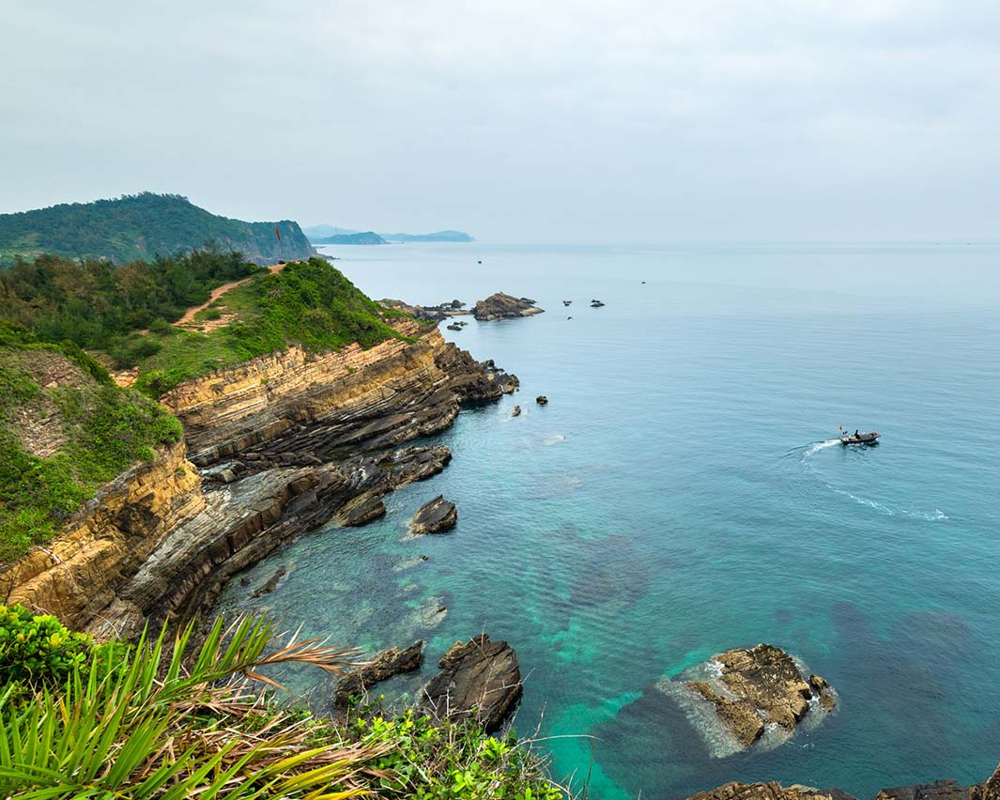
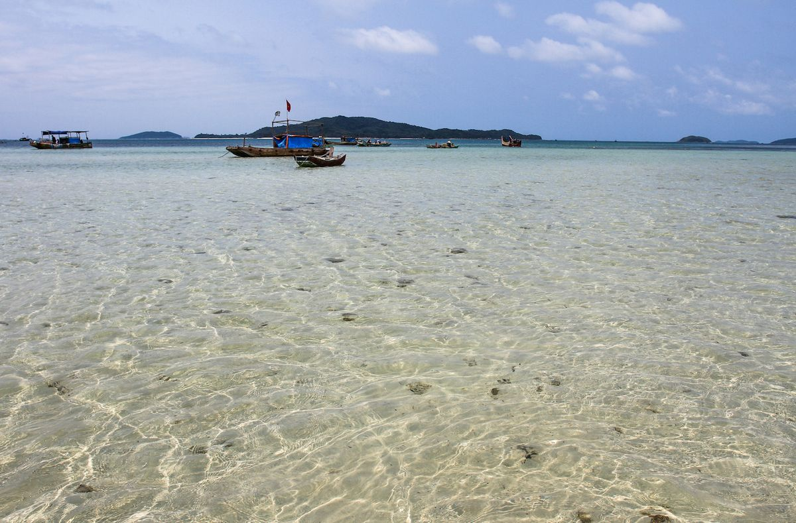
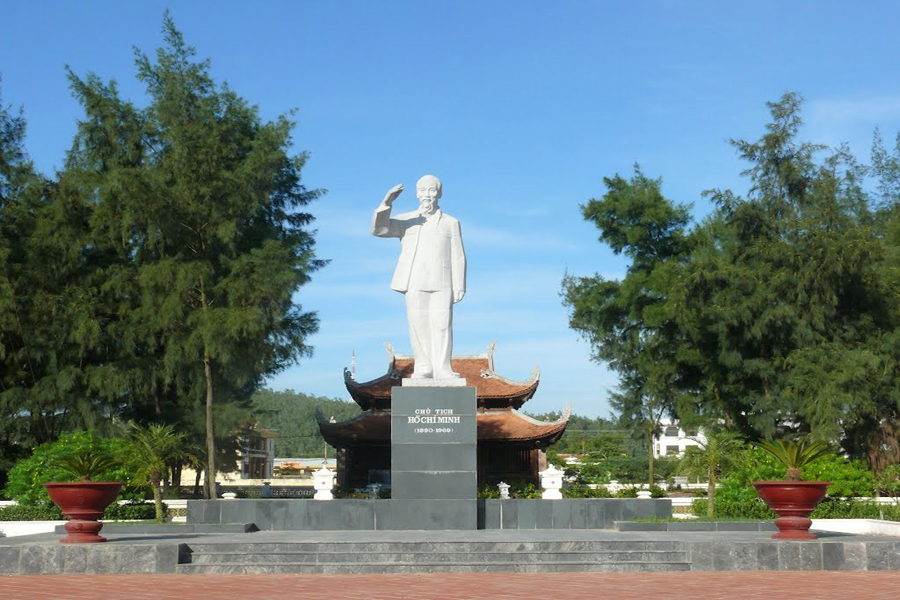
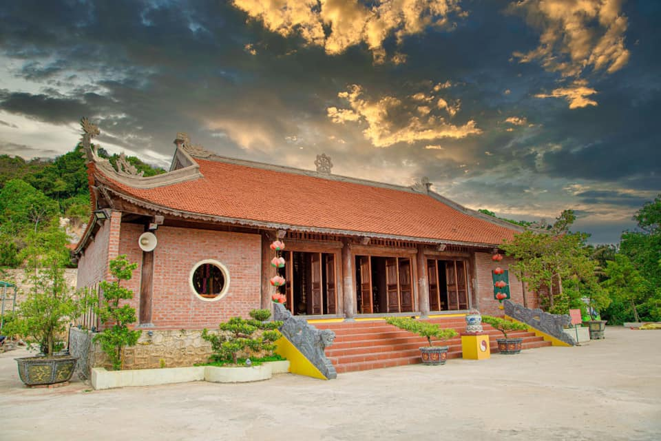

Ngây ngất với vẻ đẹp thơ mộng của đảo Cô Tô ở Hạ Long
Tổng quan sơ lược về đảo Cô Tô
Vị trí: phía Đông, thành phố Hạ Long, tỉnh Quảng Ninh, Việt Nam. Hạ Long là một trong những điểm du lịch biển hấp dẫn hàng đầu ở khu vực phía Bắc, nơi sở hữu Di sản thiên nhiên thế giới do UNESCO công nhận, cùng những địa điểm tham quan sở hữu cảnh đẹp mê hồn mà tạo hóa đã ưu ái ban tặng, như đảo Tuần Châu, đảo Mắt Rồng, đảo Ti Tốp, đảo Cát Bà…

Thời điểm nào lý tưởng nhất du khách nên ghé thăm đảo Cô Tô?
Đảo Cô Tô nằm ở rìa cực Bắc của Tổ quốc, nên ở đây có đầy đủ 4 mùa xuân, hạ, thu, đông luôn. Chắc có lẽ vì thế mà mỗi mùa ở đây đều khoác lên mình vẻ đẹp riêng biệt, quyến rũ. Bạn có thể tham khảo những chia sẻ một vài nét đẹp chính theo từng mùa, giúp bạn tự do thoải mái chọn lựa thời điểm chuyến hành trình cho bản thân mình.
-Từ tháng 3 đến tháng 5: Nếu tự nhận mình là một “fan” chân chính của biển, thì đây là khoảng thời gian lý tưởng nhất để đi đảo Cô Tô đó! Lúc này thời tiết khá mát mẻ và biển cũng dịu nhẹ, bạn cũng có thể thăm thú nhiều nơi ở đây.
-Từ tháng 6 đến tháng 8: Còn nếu bạn có ý định du lịch đảo Cô Tô vào khoảng thời gian thì cần theo dõi kỹ dự báo thời tiết cùng hoạt động tàu thuyền ở đây nhé! Vì những tháng này dễ gặp phải biển động, tàu thuyền sẽ không thể ra đảo hoặc về lại đất liền.
- Tháng 9 đến tháng 10: Vào khoảng thời gian này, thời tiết miền Bắc dần chuyển sang thu, khí hậu mát mẻ, nên các tín đồ cuồng chân có thể khám phá những điểm tham quan hoặc món đặc sản ở đảo Cô Tô thôi
Vài địa điểm tham quan, vui chơi thỏa thích tại đảo Cô Tô
1. Bãi đá Cầu Mỵ: Còn được gọi là bãi đá Móng Rồng, có diện tích hơn 40ha, dài khoảng 2km, trải dài theo hướng Đông Bắc - Tây Nam của đảo Cô Tô.
2. Hải đăng Cô Tô: Cách trung tâm thị trấn hơn 4km ở phía Đông, hải đăng Cô Tô được mệnh danh là ngọn hải đăng có view đẹp nhất vì nằm trên đỉnh núi của một hòn đảo.
3. Đảo Cô Tô Con: cách Cô Tô lớn chừng 1km là đảo Cô Tô Con.
4.Ngoài ra trên đảo còn có bãi tắm Vàn Chảy, đường tình yêu, nhà lưu niệm Bác Hồ, chùa Trúc Lâm, rừng chõi nguyên sinh…
 